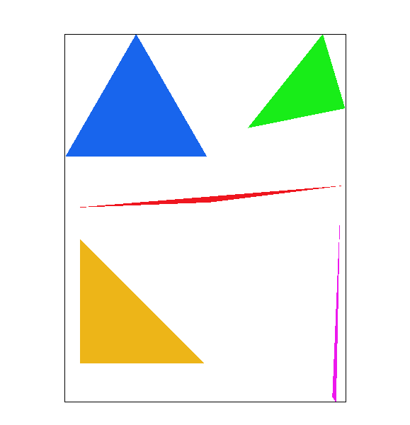
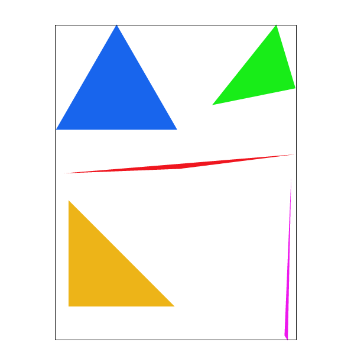
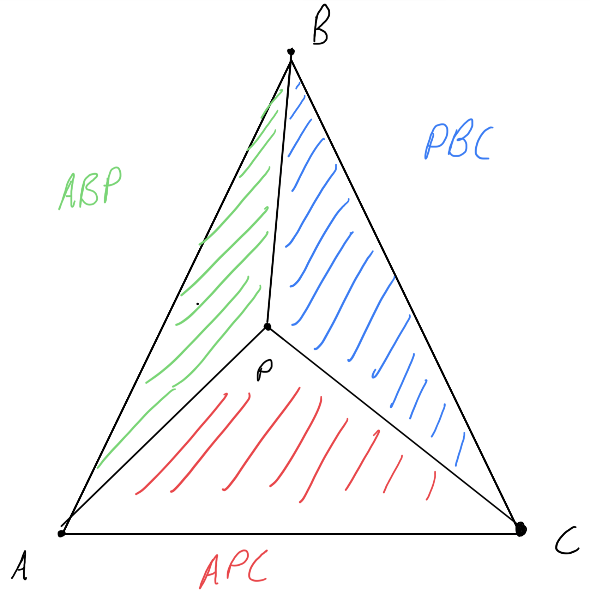
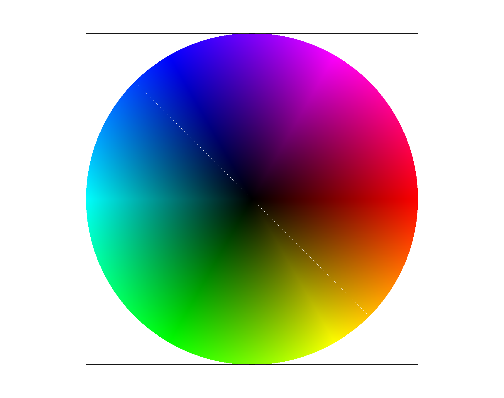
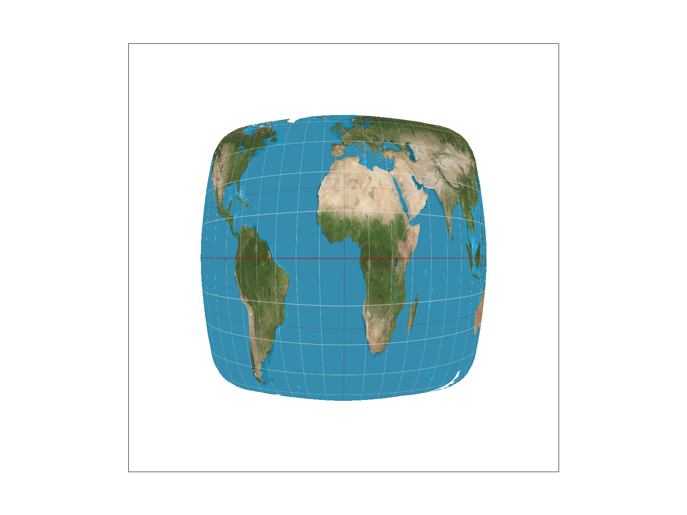
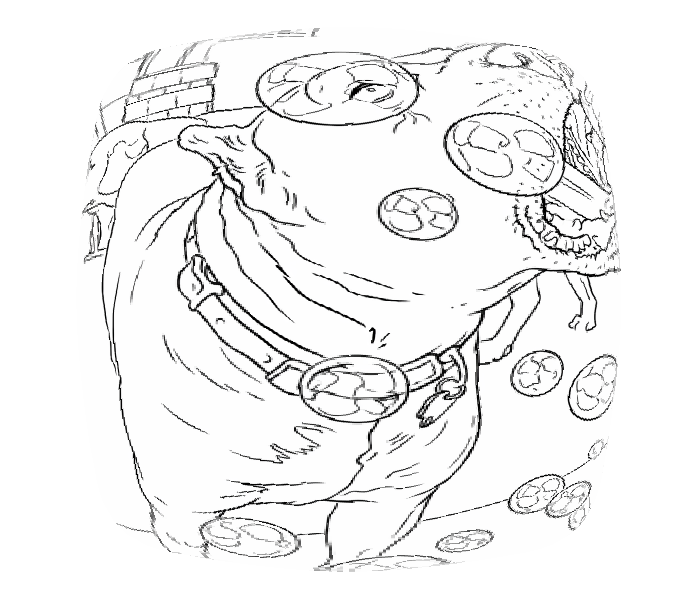
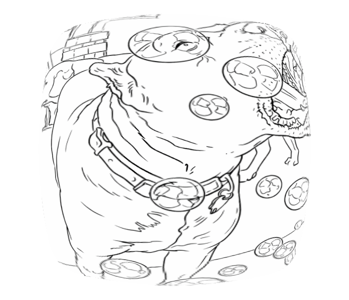

CS184/284A Spring 2026 Homework 1 Write-Up
Link to webpage: https://cal-cs184-student.github.io/hw-webpages-dvyns/hw1/index.html
Link to GitHub repository: https://github.com/cal-cs184-student/hw1-rasterizer-any-name-works#/sp26
Overview
We modified a 2D rasterization pipeline that converts SVG geometry into screen pixels to implement triangle rasterization and geometric transforms. We started with a point-in-triangle tests over a bounding box for each triangle then we layered on supersampling for antialiasing, barycentric coordinates for color interpolation, and additional pixel sampling and level sampling methods to implement texture mapping.
Task 1: Drawing Single-Color Triangles

src/rasterizer.cpp, we rasterize each triangle by first computing the smallest axis-aligned bounding box that contains all three vertices of a given triangle.
Then we clamp that box to the framebuffer and iterate through each sample point inside that box.
For each sample, we evaluate the three edge functions (signed cross products against the triangle's directed edges).
If the sample has a consistent sign for all three edge tests, it is inside or on the boundary of the triangle, so we fill that sample with the triangle color; otherwise we skip it.
This is no worse than checking each sample in the bounding box because that is exactly what we are doing.
We were unsure what qualified as an interesting part of the image so we just centered it. Centering the image gives a good view of how our current method of rasterization effects aliasing with the different shapes of triangles.
Task 2: Antialiasing by Supersampling
The supersample buffer is sample_buffer, a std::vector resized to width * height * sample_rate. Each pixel \((x, y)\) owns a contiguous block of sample_rate entries, indexed as:
sample_buffer[(y * width + x) * sample_rate + (j * sq_sample + i)]
where i, j ∈ [0, sq_sample] and
sq_sample = sqrt(sample_rate).
Pipeline modifications:
set_sample_rate() / set_framebuffer_target() — both resize sample_buffer to width * height * sample_rate, ensuring the buffer always matches the current window size and sampling rate.
clear_buffers(): fills both rgb_framebuffer_target and sample_buffer with white before each frame.
rasterize_triangle(): for each pixel in the bounding box, iterates over a sq_sample × sq_sample grid of sub-sample locations. Each sub-sample offset is placed at the center of its sub-pixel cell:
float dx = (2.0f * i + 1) / (2.0f * sq_sample);
float dy = (2.0f * j + 1) / (2.0f * sq_sample);
Sub-samples passing the three edge tests are written into the sample_buffer. We use a winding-agnostic check (all ≥ 0) || (all ≤ 0) that handles both CW and CCW triangles.
fill_pixel() — used by points and lines. Writes the same color to all sample_rate slots for the pixel, so averaging during resolve produces the correct solid color with no supersampling effect.
resolve_to_framebuffer() it averages all sample_rate Color entries for each pixel, multiplies by 1/sample_rate, then writes clamped 8-bit RGB values into rgb_framebuffer_target.
Why Supersampling Is Useful
Sampling multiple locations within each pixel and averaging the results creates smoother edges and more accurately represents pixels that are only partially covered by an object.
|

|

|

|
Results from the images:
At sample rate 1, the skinny triangle corner shows dramatic aliasing the entire pixels are skipped because the single center sample misses the very narrow geometry, producing disconnected or missing pixels and harsh jagged edges.
At sample rate 4, the corner becomes noticeably smoother. Pixels that are only partially covered by the triangle receive a blended color (roughly 1/4, 2/4, or 3/4 intensity depending on how many of the 4 sub-samples fall inside), creating a soft gradient along the edge. The thin tip is now visibly continuous.
At sample rate 16, the effect is even more pronounced. With 16 sub-samples, the coverage fraction for each edge pixel is estimated much more finely and smoother (in increments of 1/16 rather than 1/4), producing a smoother gradient and better preserving the thin tip geometry. The triangle corner appears nearly continuous and the staircase artifact is largely eliminated.
Task 3: Transforms
We posed cubeman in a mid-stride running position. We rotated the torso slightly forward to simulate motion and rotated the legs in opposite directions to create a dynamic stride. The arms swing opposite to the legs to mimic natural running biomechanics. We also adjusted limb proportions and used different colors to better visualize the hierarchical transforms and make the pose more expressive.
Task 4: Barycentric coordinates
Suppose you have a triangle with vertices \[A\equiv (x_A, y_A), B\equiv (x_B, y_B),\text{ and }C\equiv (x_C, y_C)\] and some point inside the triangle \(P\equiv (x_P, y_P)\). The barycentric coordinates of \(P\) are \((\alpha, \beta, \gamma)\). Then \(\alpha\) is the proprtion of the area of the triangle \(ABC\) that is covered by the triangle \(PBC\), and similarly for \(\beta\) and \(\gamma\). Triangle \(PBC\) is necessarily inside triangle \(ABC\) by defintion. The triangles \(PBC\), \(APC\), and \(ABP\) clearly sum together to make up all of \(ABC\) since the lines from each vertice to \(P\) trisect \(ABC\). This is shown below.
Screenshot from svg/basic/test7.svg is shown also below:
|

|

|
Task 5: "Pixel sampling" for texture mapping
Pixel sampling is the process of determining the color of a pixel on the screen by looking up the corresponding point in a texture image.
When rasterizing a textured triangle, each vertex has both a screen-space position (x, y) and a texture-space coordinate (u, v) in the range [0, 1].
For any pixel inside the triangle, we compute its barycentric coordinates α, β, γ and use them to interpolate the texture coordinates:
v = αvA + βvB + γvC
u = αuA + βuB + γuC
We then scale u and v by the texture’s width and height to obtain a continuous texel coordinate, and sample the color from the texture at that location.
Nearest neighbor sampling rounds the continuous texel coordinate to the nearest integer texel and returns that texel's color. It's fast but can look blocky or aliased, especially when zoomed in, because it doesn't consider surrounding texel information.
Bilinear sampling takes the four texels surrounding the continuous sample point and blends them using linear interpolation, first horizontally between the two left and two right texels, then vertically between the resulting two colors. This produces a much smoother result because the sampled color is a weighted average of its neighbors based on how close the sample point is to each.
|
|

|
|
|
|
The relative difference between nearest neighbor and bilinear sampling in the picture above is that the dotted line in the picture seems a bit blurrier in the bilinear sampling while the nearest sampling looks sharp, clear and blocky.
When there will be a big difference between nearest neighbor and bilinear sampling is when the texture is viewed at a steep angle or from a distance, causing it to be minified. In these cases, nearest neighbor can produce severe aliasing artifacts, while bilinear sampling will still provide a smoother appearance by blending texels together.
Task 6: "Level Sampling" with mipmaps for texture mapping
Level sampling is an antialising technique that samples from downsampled versions of our texture stored in a mipmap at various
mipmap levels. It chooses a level based on how fast the texture space position changes relative to changes in pixel space position.
When this rate of change is high (e.g. dudx and dudy in Texture::get_level are large),
it samples from a lower resolution mipmap. This avoids aliasing artifacts that would occur if we sampled from a higher resolution
image since we would be well below its's nyquist frequency.
We implemented this in the Texture::get_level, Texture::sample, and RasterizerImp::rasterize_textured_triangle functions.
RasterizerImp::rasterize_textured_triangle implements the same basic supersampling algorithm used in Task 2 except,
for each sample point, we create and assign a SampleParams struct sp with barycentric
interpolated positions in \(u,v\)-space for the sample positions \((x,y),(x+1,y)\) and \((x,y+1)\).
The sp instance is also assigned a pixel method variable and a level method variable, then passed into
Texture::sample.
Texture::sample uses the pixel and level methods of SampleParams to determine how to sample the texture,
then provides function calls to the Texture::sample_nearest and Texture::sample_bilinear functions implemented in Task 5
at levels provided by a call to Texture::get_level.
Texture::get_level returns the appropriate mipmap level for a given SampleParams instance.
It takes the base two logarithm of the max of the magnitude of the vectors
\[\left(\frac{du}{dx}\mathbf{\hat{u}}+\frac{dv}{dx}\mathbf{\hat{v}}\right)\text{ and }
\left(\frac{du}{dy}\mathbf{\hat{u}}+\frac{dv}{dy}\mathbf{\hat{v}}\right).\]
For pixel sampling:
Nearest sampling is computationally the cheapest by far, but it has pretty terrible quality for most images. It does nothing to reduce aliasing.
Bilinear sampling reduces aliasing by doing linear interpolation three times: twice in the \(u\)-direction, then once in the \(v\)-direction. This usually provides a better estimate of what the color value would be at a point, but it is more expensive and can lead to blurring.
For level sampling:
Using the first mipmap level (L_ZERO) is the equivalent of not using any mipmap at all, which saves a bit on memory. It is the fastest
of the level sampling methods but it can cause aliasing when sampled textures are far away or at weird angles.
Using the nearest mipmap level (L_NEAR) is more expensive than L_ZERO but cheaper than L_LINEAR.
It helps to avoid aliasing but it can lead to "jumps" in texture appearance when switching between mipmap levels.
Using the linear mipmap level (L_LINEAR) basically performs nearest mipmap sampling at the two closest mipmap levels then interpolates between them.
This reduces some of the jumpiness of the nearest mipmap sampling method, but add some additional overhead with the interpolation.
Supersampling, if done at a high enough rate is the most effective way to deal with aliasing. However, it dwarfs the other methods in memory and computational costs. It requires you to store some multiplicative factor of samples for every pixel, then runs whatever pixel/level sampling method you are using on every single sample. The sampling rate required to fully remove/deal with aliasing can be so high that it becomes impractical for some tasks.
|
|
|
|

|

|